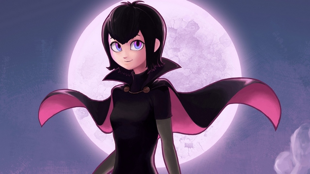

Mew Forest: Берегитесь, Дракула!

Жанр: Другое, комедия, фэнтези, лирика
О произведении: Невозможно написать то, что никогда не было до этого не написано. Куда не посмотри, любой сюжет уже кем-то запечатлён на бумаге или в кинематографе. Можно сказать, безвыходная ситуация. Но... Я, как автор постоянных литературных провокаций (по крайней мере, хотелось бы считать себя таковым) и в этот раз решил сделать вызов, стараясь написать нечто новое и неожиданное, вложив в рассказ не только необычное сочетание жанров, стилей и сюжета, но и часть своей жизни..)
Автор этого произведения рекомендует скачать рассказ, так как он содержит авторские сноски, поясняющие некоторые современные слова и выражения, непонятные старому поколению.
A1
Это было одним тёплым летним утром. Солнце ещё не успело обжечь своими лучами влажную траву, покрывающую газоны дачных участков, расположившихся вокруг криво-заасфальтированной дороги, идущей далее в неизвестном направлении, как, собственно, и большинство дорог в России.
Да, это утро было особенным, наш главный герой сделал нечто, что изменило его будущее так круто, что я, даже вместо того, чтобы сейчас спать, пишу про это книгу.
Итак, солнце взошло, птички, собачки и кошечки проснулись. Более существ, просыпающихся с рассветом, не обнаружилось, хотя, погодите-ка! Наш персонаж, чьё изображение и внешность вы сейчас рандомно подбираете, показался на старой деревянной лестнице, отделяющей его от падения со второго этажа. Однако нет, увы, он не в счёт, ведь, как уже догадается особенно умный и эрудированный читатель, наш персонаж и не засыпал.
…
Это было одним тёплым летним утром. Солнце беспощадно палило раскалившийся до 60 градусов асфальт. Все нормальные люди уже давно вкусили пищу и занимались всяким бездельем: первые смотрели новости, вторые, судорожно загружали на Инстаграм , через дачный интернет, фотографии завтрака, третие готовили обед, особенные же экстремалы косили траву и убирали с участка остатки «вчерашнего», пытаясь хоть как-то убраться перед отъездом.
Наш главный герой всё же открыл глаза. Хотя, наверное, пока что героем, он называется немного внатяжку. И да, его зовут Сергеем, нет, нет, ничего не подумайте, меня-то зовут Мью Форест. Но, стоит признать, что года у нас совпадают, ему 16.
«Вау, сегодня я проснулся раньше обычного!» - сказал он вслух, по известной лишь ему одному причине, - «Да я становлюсь прямо человеком!». Но нет, название рассказа ещё рано связывать с этими рассуждениями, наберитесь терпения, сами всё поймёте.
Итак, этот парень жил немного раньше 1 августа 2013 года , что-таки позволило ему недавно посмотреть в интернетах очень неплохой мультфильм «Hotel Transylvania », в нём мне и самому, как автору, да и как парню, очень понравилась одна тян , и, всё бы хорошо, да вот дочь Дракулы… Хотя… разве это препятствие?!
И вот так, наполнив голову мыслями о причинах распада вселенной, неудавшемся настоящем, а также с продолжающимся ещё где-то, на подсознательном уровне, сном, Сергей вышел на ту самую деревянную лестницу.
В принципе, всё как обычно, однако, после умывания я бы всё же ему посоветовал идти завтракать, а не тут же включать металкор на полную громкость, как бы мне самому оный жанр не нравился . Хотя… К чему такая принципиальность?
Променяв вкус завтрака, Сергей почувствовал вкус металкора. Не стоит говорить, что при подобных ситуациях, люди делятся на два типа: одни закрывают уши и убегают как можно дальше, другие же наоборот, всё время прыгают, ритмично машут головой и кричат непонятные звуки. Наш герой относился к последним и, не заморачиваясь, что, его могут увидеть соседи, так свято любящие жанры, несколько отличающиеся по темпу от металкора, вышел «танцевать» на шаткое основание верхней ступени.
Наконец, настал момент закричать что-нибудь на-английском, но, мозг упорно выдал совершенно другой словарный рандом. «Я люблю тебя, дочь Дракулы, YEEAH!» - закричал наш герой. Ответный крик последовал уже от мамы, если убрать слова, описывающие, всю красоту и ум нашего героя, можно было разобрать два требования: «идти завтракать» и «провалиться со своим роком». Увы, меткое замечание Сергеем по поводу того, что всё же стоит уточнить жанр, было воспринято, как «сигнал для принятия мер по выкидыванию завтрака на улицу».
A2
Яркий свет луны освещал потемневшие от сумрака листья деревьев. Казалось, будто огромный прожектор освещает все сады, леса и поля. Ни одной души на улице: даже мотылькам ленно было лететь к манящим огонькам на столбах, окружающих такую бескрайнюю улицу. Мир будто бы застыл, всё так и манило к себе своей безмятежностью и спокойствием, приглашало к себе.
Дверь, ведущая на спуск к первому этажу, открылась, но, увы, природного спокойствия там не было и в помине. Красные глаза и неутолимая жажда, вот, что скрывалось в это время за дверью. Но нет, и сейчас также не стоит догадываться на тему названия рассказа, вампира за дверью вы не обнаружите, скорее, всю ночь не спавшего, Сергея. Хотя, если бы вампиры вообще существовали, они и то бы выглядели бы поопрятнее. Споткнувшись о последний порожек и назвав его самым ходовым в школе словом, он, шатаясь, побрёл в сторону умывальника. В голове, тем временем, крутился мануал по Мэссиву и какой-то ля-минорный надоедливый аккорд. Ну а что можно ещё делать ночью, как не сводить треки?
Умыв свой фейс , наш герой, наконец, понял, что он один в саду и в сумраке ночном и, что, в принципе, на него может напасть какой-нибудь нехороший монстр, что кажется вполне реалистичным после такого долгого сидения за монитором.
Послышался шорох листвы. «Мне конец… Кто бы это мог быть, может вор, а может… вряд ли это ветер». Как бы то ни было, падающее сзади яблоко на землю сыграло роль спускового крючка и, подобно сигнальному пистолету, используемому на легкоатлетических соревнованиях, дало старт для невероятно быстрого бега.
Бег был не только быстрым, но ещё и достаточно эпичным. Конечно, плюс один в его карму, но, всё же, стоит помнить о таком феномене, как роса. И вот так, позабыв про данное обстоятельство, наш герой размазался по мокрому газону, приняв, при этом, несколько горизонтально-ориентированное положение.
Никого вокруг не было, даже ветер не шумел, давая отдохнуть уже и так изрядно потрёпанной листве на деревьях. Наш герой перевернулся на спину, запах влажной травы начал успокаивать его встревоженную душу, напичканной уже поднадоевшей информацией про LFO . А тем временем перед глазами небольшие перьевые облака, проносящиеся в небе, постоянно меняли окрас яркость луны. Сергею даже показалось, будто бы к ней подключили рандомный Stepper .
«Да, лето в этом году необычное, и почему я сидел так много дома…» - он взглянул на, освящённый таинственным светом, дом, - «Что за чушь у меня в голове, пугаюсь ветра, яблок, а такое не замечаю…» - наш герой вздохнул, - «Ладно, наверное, мне пора идти. Засну хотя бы полтретьего».
И вот, снова повернувшись лицом в сторону травяного покрова и упершись руками в землю, Сергей оттолкнулся, дабы встать с земли одним простым толчком, как вдруг, во время полёта, он почувствовал прикосновение чужеродного железного предмета о его спину. Увы, его сегодняшнее умывание оказалось безуспешным действием, так как, поняв, что встать ему не удастся, он шмякнулся лицом о землю с ещё большей силой. Но, вместо того чтобы проснуться, он увидел в глазах уже совсем другие звёзды, нежели мгновение назад разглядывал на небосводе.
- Только не кричи, - послышался голос сзади, - Неожиданно, да, понимаю, что поделать, когда-то это должно было случиться.
Нет, наш главный герой не спал, и даже наоборот, голова его после удара болела слишком уж правдоподобно. Да, что удивительно , наркотики он также не принимал.
- Ну что ж, давай знакомиться! – добавил еле тихо голос, да, в нём явно чувствовались оттенки женского тембра, что было более чем странно, заставив сомневаться в приёме средств, даже самого главного героя.
Вполне возможно, далее шоковое состояние и анабиоз так и не покидало бы Сергея до самого утра, пока добрые соседи не взглянули бы в окно, и, увидев Сергея, валяющегося на траве, заключив одновременно медицинский и психиатрический диагноз, закричали бы его родственникам о произошедшем. А они же, в свою очередь, раскрасили бы его положение непереводимыми речевыми оборотами.
Однако пока что Сергея волновали менее перспективные вопросы, например, сколько пуль в обойме, сразу ли убьют, и стоит ли вообще «знакомиться».
- Ну ладно, ты можешь встать, только не убегай, - добавила незнакомка, да, минутное молчание и размышление Сергея о том, как он нехорошо провёл свою жизнь за последние 16 лет, да и воспоминания тех немногих ярких моментов в жизни, не принесли особенного успеха в беседе.
- Подожди, - вдруг сказала она, хотя, кроме пола это слово вряд ли определяет ответ на вопрос «кто?», - Только, пожалуйста, сразу не поворачи…
- Стоп, вы девушка? – вдруг перебил её Сергей и тут же развернулся, несмотря на замечание, по которому ему вроде бы как нужно было бы повременить со «знакомством».
A3
- Мамаша, ваш ребёнок, опять накурился ! – заслышался кислотный и до того громкий голос соседки, что Сергей тут же открыл глаза. Мать его тут же подбежала к лежащему "в тени полудня", но, увидев, что Сергей, как ни странно, в полном здравии, и, очевидно, просто здесь спал, лишь пнула его ногой, сказав пару ласковых слов.
Допрос на тему наркотиков прошёл без особых жертв. В принципе объяснение, что её сыну настолько нравится природа, что он решил взлечь на траву, матерью воспринимался вполне адекватно, но вот тот факт, что трава была ею посажена, и следующие несколько месяцев в этом месте она принципиально не захочет расти, тревожил её душу покруче индийских сериалов.
А тем временем Сергей пытался с-апдейтить увиденное, нет, к счастью, девушка была красивая, даже слишком, но, почему же она так напоминала ту героиню из фильма Hotel Transylvania? Казалось бы, вот и разгадка, но не всё так просто, ведь ещё совершенно ничего не известно, да и вообще, это слишком необычное предположение, разве стоит в подобное верить? Даже несмотря на то, что из-за удивительного сходства наш герой (немного) потерял сознание, мы не можем не утверждать, что это не розыгрыш и не фантомная галлюцинация, вызываемая излишне долгим сидением за ПК.
Все эти мысли и подобные им крутились в голове Сергея и всё это, смешанное, одновременно, с интригой и со страхом происходящего, не отпускало его сознание ни на минуту. И всё же, стоит признать, что решение, которое принял, в конце концов, Сергей, а, именно, прийти ещё раз на то же место в то же время заслуживает уважение, хотя бы потому, что та «гостья» была, возможно, с оружием.
Всё же для начала расследования, думаю, стоит собрать улики, как это делают в фильмах Американские копы. Начнём с фактов про вампиров:
1. Их никогда и не существовало. Это миф, возникший ещё в средние века, а всё из-за банального неумения описывания болезней. Бледная кожа и низкая температура тела, скорее свидетельствует о какой-либо сердечной болезни или о прогрессирующей дистонии, нежели об «сверхястественных способностях».
2. Изначально легенда о Дракуле, естественно, не предусматривает никакой дочери, а, учитывая расстояние и прошедшие года, то даже если можно было бы утверждать, что вампиры бессмертны (да и вообще существуют), то девушка, за всё это время, не смогла бы остаться незамеченной, даже при передвижении по ночам.
3. Её знания русского поражают.
4. Внешность то же придумывают дизайнеры Dreamworks, что само по себе отличается от реальности.
5. Ну и наконец, последнее: романтические лавстори про вампиров это слишком банально.
Что ж, очевидно Сергей придерживался того же скепсиса, что и мы, однако глаза достаточно тонкий инструмент, поэтому не верить им было бы слишком неестественно.
…
Смеркалось. Но не для всех. И так, глубоко послав соседей, Сергей стал отрабатывать репутацию наркомана. Около умывальника были развешаны листовки с надписями: «Я люблю тебя, дочь Дракулы!», «Дракула рулит!» и прочей чепухой, которая хоть как-то касалась темы ночного события.
К 11 вечера на том самом месте уже стояла развёрнутая палатка, ноут и наш главный герой. На всякий случай он взял с собой нож и достаточно яркий фонарик. Однако, нож, к великой печали не был серебряным, эх, о чём он думал, неужели фильм о Линкольне так и не научил его основам борьбы с «нечистью»? Увы, Сергей в этот раз был сам на себя не похож, он был романтиком, не предусматривающим к тому же ещё и тот факт, что оный нож с трудом режет даже яблоки. Да и зачем нож, если та незнакомка такая красивая!
Постараемся быть объективными, на месте Сергея лучше было бы выпить успокоительное и двойную дозу снотворного, нежели… Хотя, знаете, в жизни происходит так много интересного и необычного, что если на всё подобное этому, реагировать по инструкции, жить может статься как-то не по себе: скучно, серо и грустняво.
И вот, на часах было полтретьего, почти, как вчера, только, пожалуй, ещё таинственнее.
Белоснежный покров звёзд мерцал во всей своей красе, а воздухе витало нечто особенное. Завиднелась даже редкость для здешних мест: млечный путь. И почему же там так много звёзд? Что это за облако, окружающее нас? Эти вопросы давно не возникали в голове у Сергея и вот, сейчас они начали прорастать вместе со сном, да, он всё ещё лежал на сложенной палатке, глядя в небо… Наконец, его глаза сомкнулись и его одолел глубокий сон.
Какие-то странные пчёлы объясняли ему, что млечный путь – это край нашей галактики, что она не просто спиральная, а спиральная с перемычкой, и что, так как мы находимся близко к краю, нам кажется, что на этом «пути» звёзд больше. Изредка эти пчёлы смеялись и кусали свой почему-то всегда недоеденный Milky Way и, переворачиваясь, будто бы в невесомости, звали посмотреть на чёрную дыру в центре галактики, а Сергей всё сопротивлялся и боялся, что гравитация там будет слишком сильной, и все мы умрём…
A4
Наверху ярко светило солнце. «Откуда я здесь?» - первый вопрос, который задал себе Сергей, но, увы, ответ был уже не особенно оптимистичным. Казалось, что прошедшее было всего лишь неким сновидением… А разве можно было ожидать чего-то большего, чем осознание рациональной реальности? Щито поделать, десу, такова жизнь…
Настало время вновь плестись на верхний этаж, грусть и уныние обрушились на нашего героя, ничто уже не представляло интереса. «Ощущение выжатого лимона», как бы сказала моя бабушка, а как бы сказал я, как автор: «хреново».
И вот угрюмый, не выспавшийся, убитый силуэт открыл дверь своей спальни и… рухнул на пол.
Что такое? Задолбал он всё время засыпать и падать в обморок, может избавиться от персонажа? Однако не поспешим делать выводы, ведь вывод можно сделать только после имения достаточного для утверждения количества фактов.
Хотя, знаете, увидеть дочь Дракулы на своей кровати , хоть и спящую, и остаться на ногах не реально даже самому закалённому бойцу. Да, именно так начинается нечто интересное, а именно вторая часть!
B1
Сквозь мутный взгляд, Сергей уже мог заметить, что со стороны на него никто не смотрел. Лишь зажжённая вверху лампа, гордо потрескивала на потолке. «Что я здесь делаю и что со мной было?» - да, это вполне адекватные вопросы, ответы на которые никогда не появляются сразу.
Что-то холодное на лбу, нечто, напоминающее сложенную марлю, пропитанную холодной водой. Наверное, это сделала мама, снова ничего интересного…
- Привет! – вдруг раздался незнакомый голос рядом. Сергей обернулся.
Положив руки на край кровати, и, сидя на ковре, перед ним сидела девушка с чёрными волосами, одетая в тёмную одежду. Её руки покрывала полупрозрачная ткань, плавно переходящая в перчатки, а на ноги были одеты обтягивающие полосатые колготки. Её глаза с интересом смотрели на нашего героя, однако был ли вызван интерес составом его крови или привлекательной внешностью, было пока не известно.
- Только, пожалуйста, не падай ещё раз в обморок, окей? – мягко спросила она, потянувшись, как кошка, на кровати.
- Эм… Э… Кто ты? И… что тебе нужно от меня? – да, наш главный герой особенно не заморачивался с выбором вопросов, поэтому, на автомате выпалив, те, которые так часто задеваются в быдлоужасах , стал дальше разглядывать её ноги незнакомку, мысленно даже не стараясь «проснуться». В принципе надежды, что это была реальность, практически и не существовало, так что со свойственной тупостью, изредка нападающей на гениев, Сергей добавил – А.. Это сон?
- Да, конечно, можешь продолжать спать, - иронично ответила незнакомка, однако нашего героя этот ответ ничуть не смутил: он лёг на кровать и стал ждать, пока «заснёт во сне, чтобы проснуться». Опять же наш герой снова забыл про золотой опыт, который теперь уже за небольшую плату, предоставляет нам Голливуд, ведь если он заснёт во сне, то это уже скорей всего будет продолжение фильма Начало , нежели просыпание.
Прошла одна минута его «сна», и вот, наконец, он «проснулся».
«Да, это был всего лишь сон. Жаль, а ведь она была такой красивой!» - Сергей повернулся, решив продолжить свои рассуждения о «сне» на другом боку … А вот нефига.
Перед ним на кровати лежала всё та же девушка, упрямо смотря ему прямо в глаза. Да, они были именно синего цвета, как и любит автор этой книги .
- Выспался? – слегка улыбаясь, спросила она.
- Слушай, раз уж это сон, то стоит, наверное, сказать… Ты очень красивая. – наш герой попытался докоснуться до её лица, но она резко поймала его руку, но не отпустила.
- Смотри, я в любой момент могу выпить твою кровь, - уже серьёзно сказала она, всё также смотря на Сергея.
Наш герой будто бы кол проглотил. Ведь и вправду он легко вспомнил, как попал сюда , да и надпись на плакате, не расплывалась при каждом новом взгляде на неё, неужели всё это реальность, но тогда, тогда он в большой опасности! Анабиоз Сергея был прерван её раскатистым смехом.
- Как меня всегда радует ваша реакция, - она прикрыла свой рот рукой, взяв другой одёрнувшуюся руку Сергея, ладно, ладно, если хочешь, давай знакомиться не будем, перейдём к реальности и, - она легла на спину и написала слово в воздухе, - к рациональности… Давай, задавай вопросы, обычно люди именно так и делают вначале, хотя… нет, вначале они падают в обморок. Хех, а ты смешно падаешь… - Она улыбнулась.
Сергей пододвинулся спиной к стене, на его лице отразился интерес. Докоснувшись до подбородка, правой рукой и приняв на мгновение позу мыслителя, Сергей неожиданно щёлкнул пальцами.
- Слушай, а сколько сейчас времени?
- И это твой вопрос? – удивлённо спросила она.
- Да ладно, мы же не на викторине вопросов. Меня зовут Сергей, а это, как видишь, мой дом. Ну или типа того… Слушай, а зачем вообще нужно было меня так разыгрывать? – сыграв в ва-банк, добавил наш герой.
- А меня зовут Эл, - не обращая внимания на заданный вопрос, продолжила незнакомка - Понимаю, необычное для здешних мест имя, но, как мне кажется, вполне обычное для дочери самого Дракулы…
В душе Сергея уже вовсю трубили трубы, и играл симфонический оркестр. Знакомая мелодия лунной сонаты игралась уже на завышенном питче и драм-н-бейзовских барабанах. Однако рациональная сторона его сознания, тем не менее, видела подвох в данной «сцене», ведь если розыгрыш, в принципе, не мог зайти так далеко, то, следовательно, для Сергея остаётся лишь один вариант под кодовым названием «Привет, шизофрения!».
- Ты о чём-то задумался? – спросила она у Сергея.
- Я? А, нет… Хм, а знаешь, всё же у меня действительно ещё много к тебе вопросов, но, давай вначале я удостоверюсь в твоей реальности, просто это всё вокруг как-то необычно что ли… – сказал он, непроизвольно обведя руками комнату, - Знаешь, у меня к тебе будет две просьбы, хорошо?
- Ну, дава-а-й, - снова «стрельнув» взглядом и слегка наклонив голову, подобно кошке во время охоты, ответила она.
- Итак, вначале я тебя попрошу называть меня Сергиусом…
- Фанат Сирииуса Блэка ? – прервала его она, улыбаясь.
- Ну да, эмм… Кхм, ну и второе: пожалуйста, ударь меня чем-нибудь тяжёлым… ну или не совсем… может я хоть так просну… Ай! – вдруг вскричал наш герой, и схватился за левую щёку - Больно же!
- Ну не знаю, вроде бы пощёчина не такой уж и плохой выход из положения, хотя он слишком уж романтичный, а мы ведь едва знакомы… Хм… - она прислонила палец ко рту будто бы задумавшись, но Сергиус не заставил её долго ждать тут же прервав её размышления:
- Слушай, а знаешь, - он выдержал небольшую паузу, чтобы она отвлеклась, - мне даже понравилось. По-моему, это самая приятная пощёчина, которую я когда-либо получал в жизни…
На улице уже было темно. По деревянной лестнице весёлой походкой спускалась Эл, а за ней, держась за обе щеки, шёл наш Сергиус.
B2
Неожиданно для себя, Сергей остановился на середине лестницы.
- И всё-таки скажи, кто ты, и зачем я тебе нужен. Просто странно, мой дом, и ты там… Это, же как-то, ну… - Да, на долго решимости Сергея не хватило.
Эл таинственно улыбнулась, Сергею даже на мгновение показалось, что сейчас творится неладное.
- Давай я тебе скажу ответ на ухо… - она сделала характерный взмах рукой, и, когда Сергей уже было наклонил к ней голову, добавила - А потом укушу за шею и выпью всю кровь, хорошо?
Радости её не было предела, от смеха у неё даже потекли слёзы. Вот так, одной рукой вытирая быстро появившиеся слезы и прикрывая рот, а другой, держась за перила, она смотрела на бледное лицо Сергея.
- Ладно, давай спустимся, - сказала она, спрыгивая на землю. На мгновение небольшой ветер приподнял её волосы, но, поправив их, она продолжила, - Сразу говорю, я никакой не призрак, да, я настоящий человек, просто не совсем обычный, и да, я именно дочь, как вы называете, Дракулы. Что, думаешь, таких совпадений не бывает? Ну?
- Да такого просто не может быть, но… Раз это случилось… Значит всё это розыгрыш?
В ответ Эл лишь сделала эпичный facepalm .
- Жаль, а ты ведь был одним из немногих, кто мог бы меня понять, – она взглянула на звезды.
- Почему же?
- Я просто явно слышала твои утренние крики в мой адрес…
- А! это, - Сергей почесал свой затылок, пытаясь хоть как-то скрыть неудобство, - Но тогда почему же ты так похожа на героиню мультфильма, это же странно…
Вдруг послышался голос мамы Сергея.
- С кем это ты тут разговариваешь? – Выкрикнула она, выглянув из-за угла, но, увидев Эл, она тут же остепенилась и в ней включилась гостеприимная хозяйка – Ой, здравствуй, уж извини меня, я просто даже не заметила, как ты прошла сюда… А ты Сергей, что молчишь?
- Я? – так и не закрывая рот от удивления, спросил наш Сергиус, на его лице отобразился шок, но, одновременно где-то в душе уже играл металкор, ведь это ли не доказательство реальности? Лунная соната исполнялась теперь в жанре бреккора .
- Эх, Сергей, Сергей, как быстро летит время… - проностальгировала его мать - Ну, ладно, не буду вам мешать… - И вот мама было уж собралась уходить, но НЕТ, её будто бы что-то удерживало здесь и этим «что-то» было излишнее желание принять участие буквально «во всём», что происходит вокруг, - Слушай, а родители не беспокоятся за тебя?, - обратилась она к Эл, - Ведь уже темно.
Услышав это, Сергей невольно подавился, и начал обильно кашлять, однако, показав знаком аквалангистов, что всё ОК, продолжал наблюдать интереснейший диалог.
- Ну, если прикинуть, то… не думаю… - с напускно-серьёзным лицом ответила Эл.
- А где ты живёшь? – да, мама так и не отставала.
- В замке, - хрипло вставил Сергей, лишь ещё больше кашляя, хотя это было похоже, скорее, на смех. Эл повела глазами.
- Ну, недалеко здесь, ну…
- Мам, - Сергей всё же вмешался в ситуацию, - Нам нужно идти, давай я лучше, потом тебе всё расскажу, а задерживать человека ведь так некультурно.
Слово «некультурно» сыграло самый значительный эффект, так что после небольшого её извинения, Сергиус и Эл удалось благополучно смыться.
С1
Небо снова покрыли звёзды, а синева опустилась на горизонт, покрывая безмятежную полную луну.
- Что, всё так банально? - вдруг сказала Эл, - Необычное случилось, и я тебе теперь нравлюсь… Но что же тогда дальше? Какова же правда далее? – Казалось, каждая звезда отражается в её зрачках. Сергиус и Эл шли рядом да, её проницательность удивляла, хотя, возможно это был и ва-банк, кто знает, - А если я вдруг скажу, что могу остаться? Но как же тогда я смогу тебе объяснить всё происходящее, когда даже я сама многого не знаю?
Сергей вздохнул. Два синих глаза смотрели прямо на него.
- Знаешь, это вопрос веры, я бы, например, очень хотел бы верить в твоё существование даже без объяснений, но вера ведь без понимания не может существовать вечно…
- А ты уверен, что ты знаешь о мире, достаточно, чтобы считать его фактом, а не верить в него? Смотри, ведь никто из нас не может ответить непредвзято даже на самый элементарный вопрос.
- Да, это понятно, человеку невозможно знать далее своего сознания, - вставил Сергиус.
- Ага, - Эл подобрала лежащее на асфальте яблоко, - Смотри, красное ли яблоко?
- Ну оно какое-то чёрное… - проговорил неуверенно Сергей, - Хотя, если не учитывать лунный свет…
- Оно зелёное, - отрезала Эл.
- Нет, - сделав «серьёзное» лицо, Сергиус развёл руками, - Оно… красное!
- Ладно, пусть будет так, но… оно зелёное, - она щёлкнула пальцами прямо около его лица.
- Красное, - прошептал Сергей, широко улыбаясь.
- Хотя, знаешь, мы оба неправы, отвечая «да», мы искажаем восприятие яблока в общепринятое понимание что такое «красный цвет», добавляя, при этом, немного своей ассоциативности, но не более. Но ведь, с возрастом, человек начинает воспринимать всё социально, а это значит… - Эл сделала характерный взмах руками в сторону Сергея.
- Факт того, что яблоко красное навязывается социумом... – Артистично прищёлкнув пальцами в её сторону, ответил Сергей, - Поэтому маленькие дети так часто путают цвета, ведь ассоциации с ними у них совершенно другие, не такие, как у общества.
Ага, именно вот так взгляд и становится фактом. То есть яблоко красное, лишь потому что мы его таковым считаем. А взгляд на окружающее это и есть вопрос веры… – остановившись, Эл остановила его за руку. - Поверишь в меня?
- И тогда ты станешь фактом, верно?
- Пра-а-вильно, молодец, - она немного улыбнулась, - Так веришь ли?
- С одной стороны наверное мне не нужно обманывать себя…
Эл опустила глаза и уже было собралась направить свои шаги в сторону, перепутав, наверное, артистичную паузу с её окончанием, как Сергей схватил её за руку и, и подойдя к ней ближе, нежно приподнял рукой её лицо и, расправив у её глаз причёску, продолжил, – а с другой, ты никак не можешь не существовать никогда.
- Эмм… А это типа да? - оживилась она.
- Это типа так и есть, - улыбаясь ответил Сергей.
С2
На часах, висящих в комнате Сергея, было уже полчетвёртого, но больше там никого не было. Он и Эл сидели обнявшись на дачном мостике, слегка докасаясь нагими ногами до воды. Лёгкая рябь пробежала по реке, на мгновение показался гребешок окуня, будто бы специально появившегося у отражения луны. А, тем временем, из глубины пруда уже тянуло ночной прохладой, будто бы шепчущей: «Давай, дотронься до неизвестности!».
- Вот скажи, как же всё должно продолжиться? Хотя бы на это дай ответ, – еле слышно, прислонив её волосы к губам, спросил у неё наш герой, - Я проснусь?
- Вау! Ты такой креативный! – ответила она, и, живо повернувшись в его сторону, с небольшой ухмылкой взглянула на него.
- Что ж, хм… А может, это всё нереально и это лишь плод моего воображения?
- Опять ты за своё? Но ведь это уже было в Матрице … И да, если считать что я фантом, то это уже Игры Разума …
- Что ж, ты не оставляешь мне выбора… - Сергиус наклонился, чтобы поцеловать дочь Дракулы, но она остановила его рукой.
- Облом? – засмеялась она, - Впрочем, я лишь хотела сказать, что ты забыл упомянуть ещё один вариа…
Нет, не переживайте, с Эл всё в полном порядке, она не упала с мостика и не исчезла из-за внезапно наступившего рассвета, она не смогла договорить эту фразу лишь потому что Сергей поцеловал её.
Казалось, что сердце пронзил резкий электрический разряд, всё заискрилось, но ещё мгновение и наступило приятное затишье, наполняющее всё тело теплом, от груди до кончиков пальцев. Да, а в душе лунная соната тем временем уже игралась ровно, так же как и у Бетховена, точнее как в его альбомном миксе.
- И вот разве это может быть реальностью? – спросил у неё он через некоторое время.
- Хах, и ты это говоришь, лишь потому, что целуешься в первый раз?
- Нет, я серьёзно, - ответил, на мгновение, улыбнувшись, Сергей, так же глядя куда-то вдаль, на звёзды.
- Ну, если для тебя это так важно… - Эл немного потупила взгляд, наверное, она ожидала более бурную реакцию на свой подкол. И вот, ближе придвинувшись к Сергею, Эл продолжила, - Итак, всё, что с тобой происходит, это не простая случайность, ведь по вероятности, случиться это просто не могло бы. И да, я не фантом, ведь видеть меня можешь не только ты. Хм… ну раз уж так всё запутано, может, ответишь мне всего лишь на один вопрос: «Что такое реальность?», м?
Последний звук «м», хоть и быв немного не к месту, придал её рассуждениям некую изящность, и даже живость.
- Реальность, это всё это, то, что нас окружает, - ответил Сергей, обводя левой рукой горизонт, а правой рукой держа Эл за талию, - Это то, где мы находимся.
- Вот видишь, реальность это то, где ты находишься, – начала она неторопливо, - А не думал ли ты, что там, где тебя нет, ничего нет? Я серьёзно, например, то место, в котором сейчас тебя нет, не существует, и только когда узнаешь, что это самое место, например, это знаменитый город Сидней, только тогда город вообще и возникает. Конечно, он не мог возникнуть сиюминутно, но для тебя это так, ведь реальный мир это лишь то, что находится в тебе и во внешнем одновременно. Давай будем считать, что только что ты узнал про Сидней, но тогда он должен появиться одновременно тогда много лет назад и одновременно в твоём сознании. Почему бы и нет?
- Логично, хочешь сказать, пока мы не наблюдаем объект, его не существует? Но тогда мне придётся считать себя исключительным, чтобы верить, что раньше его не существовало, что невозможно, с чего бы мне стать избранным, лал. Хотя, погоди - ка! – глаза Сергея засветились, - Как тебе такой вариант: других считать за фантомы, создаваемые своим сознанием, но… А нет, не подходит, ведь все мы понимаем, как мыслит человек и что в этом задействован мозг, а раз биологическая составляющая примерно одинакова у всех людей и работает, то не говорит ли это о том, что действия других и есть следствие этого?
- Ты странный, - мягко, но без доли подкола, ответила Эл, - Большинство хотели бы быть исключительными, и неважно насколько далека от реальности их мечта, они всё равно её ждут и желают, но ведь практически никто не хочет действительно что-либо сделать для этого, ведь человеку намного комфортнее, когда всю работу делают за него, отсюда и мечты и, как ни странно, литература и фильма…
- Оказаться избранным, это ведь мечта, которую так упорно воплощают сценаристы и авторы книг, - добавил Сергиус, и, взяв руку Эл, добавил, - Но кто же тогда ты? И мы?
- А ты меня не бросишь, если я раскрою тебе правду?
- А мы встречали… Хм… - да, Сергей чуть было не оплошал, создав свой новый рекорд по тупизне задаваемых вопросов, но, вовремя осознав, что он идиот, Сергиус просто улыбнулся и продолжил, - Нет, не брошу.
- Даже, если я вдруг окажусь не вампиром, а, например, оборотнем? - спросила она, потягиваясь и еле сдерживая зевоту.
- Не переживай, я же анимаг Сириус, ну, то есть Сергиус, забыла?
- Оу, понимаю, - она артистично взмахнула рукой и сев на колени, повернулась и, шутливо завалив Сергея, легла на его грудь.
- Это что ведь, получается, - продолжала она, - В таком ведь случае батл , как в третьей части Гарри Поттера , не минуем? Анимаг Сириус Блэк против оборотня Люпина? Хех… - она перешла на шёпот, - А если вдруг перейти на серьёзную тему и не шутить, то я – человек!..
Молчание.
- Разочарован? – спросила она немного дрожащим голосом.
- Но как, для чего это стоило делать? – спросил её в ответ Сергей.
- Зачем отвечать, это всё равно иррационально. – отведя взгляд в сторону, ответила она.
- Знаешь, мой отец, ещё когда был жив, часто со мной играл в игрушки, он говорил мне, что реальность, это то, что делаешь ты, хех, - Сергей улыбнулся, - Он это делал в такой классной игровой форме, даже я, лет в 5, эту мысль не только понимал, но ещё и пытался воплотить…
- А хочешь знать, почему я сейчас так долго молчу? – Сергей посмотрел в её глаза, луна всё чаще и чаще подрагивала в её зрачках. – Я невероятно восхищён, тем, как ты сумела переделать эту реальность…
- Правда?
- Хах, ты ещё спрашиваешь? Конечно, да… Хм, а давай без лирических пауз, ответь мне, что же было действительно наигранно, а что было правдой?
- Ты намекаешь на то, встречаться ли мне с тобой?
- Эмм… - да, всё же нашего Сергиуса просекли, и как только она это умеет?
- Да, я согласна, но… - Эл выдержала небольшую паузу, - Тебе нужно знать, что моё реальное имя Софи, но оно мне самой до боли не нравится, так что, можно я так и останусь для тебя Эл?
- Ну, окей, а что же тогда второе? – и действительно, что же будет вторым пунктом?
- Встань, - сказала она поднявшись.
-Ну и…
Но было уже поздно, Эл, а она же Софи, что было сил, толкнула нашего героя с мостика в воду.
- Да, оборотень Люпин победил, да! – Прыгая от радости на мосту, закричала она.
Ответил ли наш Сергиус брызгами воды обратно? Конечно, но в это время главное было не то, как он сильно мажет, и что брызги попадают на него же, нет, это совершенно не важно, важно было другое: наш Сергиус, некогда забивший на реальность, теперь любовался ею.
Я думаю, все мы с удовольствием бы хотели обрести счастье и, быть может даже обрести его с кем-то, а не в одиночку, хотите знать, как оно достигается? Оно достигается только действиями, а именно с вашей стороны.
Так что хватит сидеть и мечтать, чудо не произойдёт само, вы должны сделать его сами!
Итак, начинайте прямо сейчас!
Особые почести:
- Режиссёру фильма “Hotel Transylvania”, за его, не лишённый эпоса, фильм. Без него я бы не написал ни этот рассказ, ни три новых музыкальных альбома: Hotel Transylvania, Psycho EP и Other Side (Bonus Album). Если интересно, то гоу по линку vk.com/cwss.music
- Музыкальным группам, также вдохновившим меня: Killswitch Engage, The Prodigy, Pendulum & Mr. Bill.
- Моим близким и родным, которые терпели мой не выспавшийся фейс, всё это время.
06.08.2013 Finished, 08.08.2013 Edited, ~6 000 Words.
Здесь собраны лишь некоторые объяснения нестандартных для обычной литературы терминов.
Скачайте полную версию во вкладке "Скачать", дабы лицезреть все пояснения, привязанные к словам.